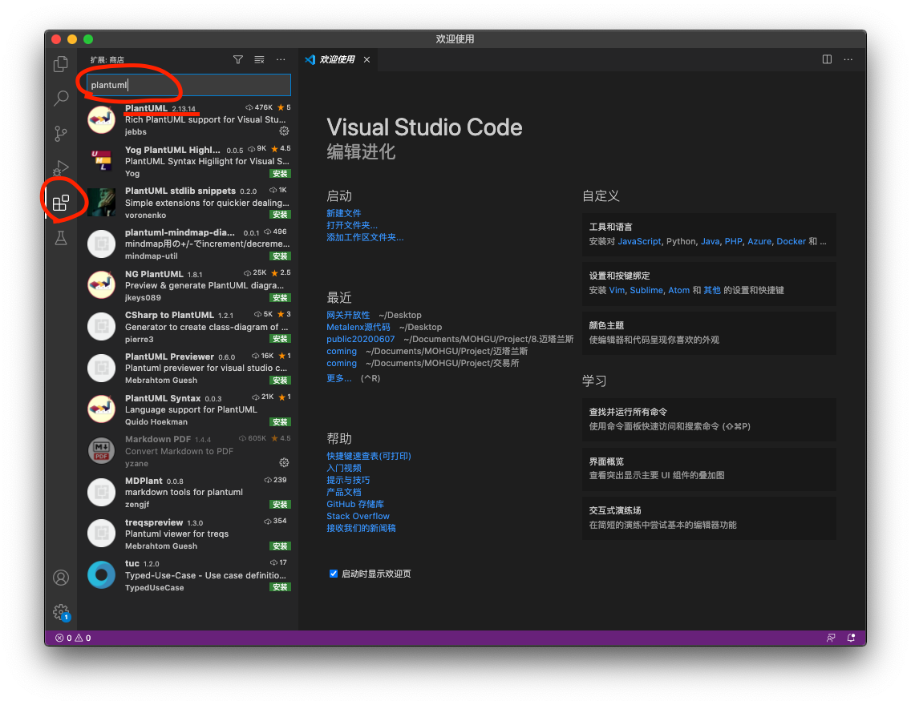
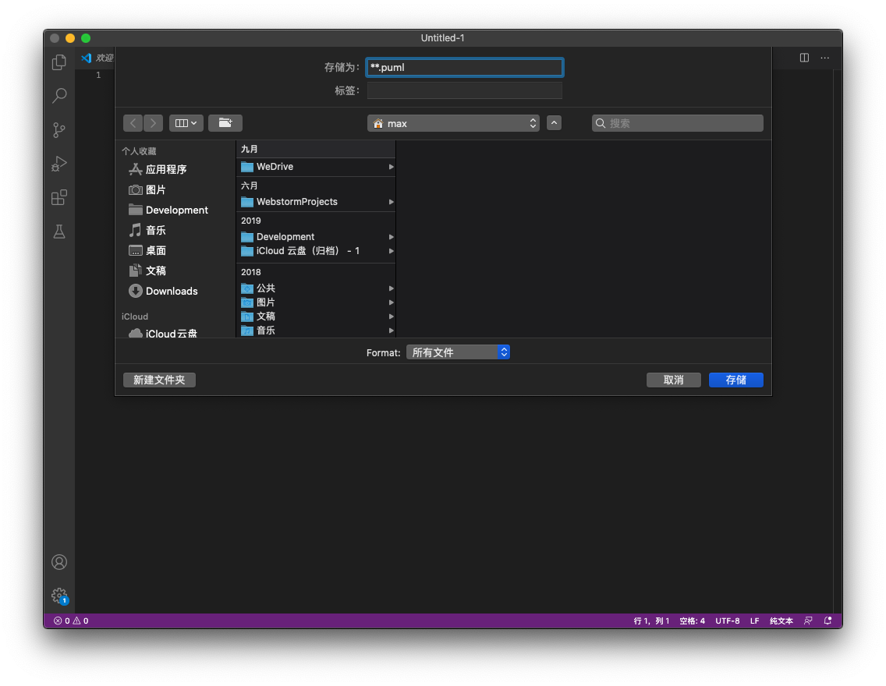
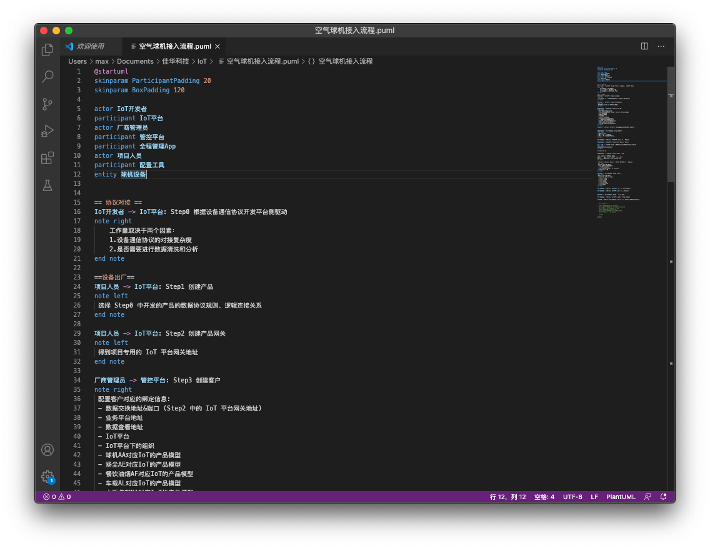
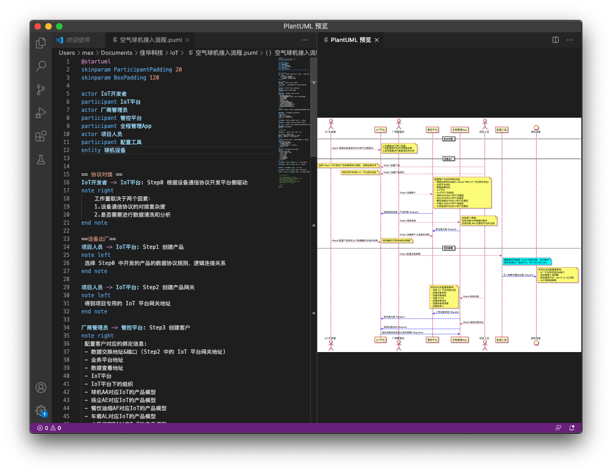
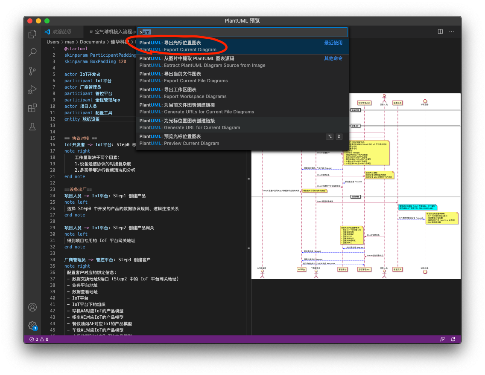
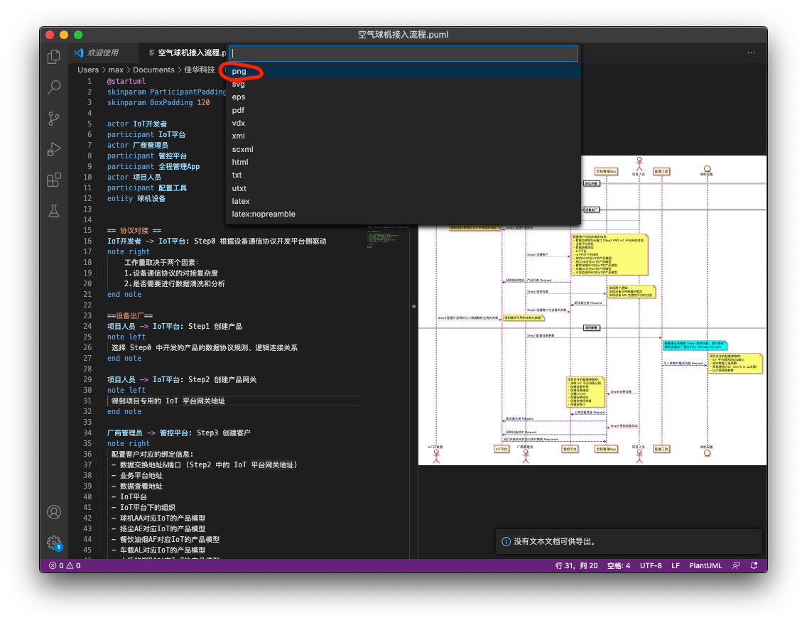

在与开发同学交流中，发现了一款绘制图表的轻量级工具- PlantUML，通过简单易学的标记语言，可以快速实现多种类型图表的绘制。此外，借助这个工具编辑的各类型图表，还可以轻松融入 Markdown，为产品工作带来非常大的便利。
深感与 PlantUML 相见恨晚，遂产生了在产品团队内部推广的想法，并编写此文档，作为产品同学学习 PlantUML 的入门资料。通过几小时的学习，四位产品小伙伴（无开发基础）已能上手使用。
准备工作
关于 PlantUML
PlantUML 定义了一套快速绘图的语言规则，基于 Java 环境完成最终的图表绘制，支持导出各种格式的位图及 SVG 矢量图。是 UML 图及其他逻辑图表的高效制作工具。 查看 https://plantuml.com/zh/ 获取PlantUML的详细语法及功能介绍。
PlantUML 图表类型及语法大全
- 时序图
- 用例图
- 类图
- 活动图
- 组件图
- 状态图
- 对象图
- 部署图
- 定时图
- 线框图形界面
- 架构图
- 规范和描述语言 (SDL)
- Ditaa diagram
- 甘特图
- 思维导图
- Work Breakdown Structure diagram
- 以 AsciiMath 或 JLaTeXMath 符号的数学公式
- Entity Relationship diagram
安装 VSCode
VSCode 是一款由 MicroSoft 开发的文本编辑工具，推荐作为学习 PlantUML 的编辑工具。
VSCode下载地址 https://code.visualstudio.com/
安装 VSCode 插件
安装并打开 VScode，之后通过软件侧边栏按钮进入“插件商店”，搜索安装 PlantUML 插件。 
关于 Java
Java 是运行 PlantUML 的必需条件, 请在您的电脑中安装 Java 环境
Mac 版 Java 安装包 https://java.com/zh-CN/download/help/mac_install.html
开始使用
创建文件
打开 VSCode，新建文件，之后立即进行保存操作，文件名需要以 .puml 结尾。 
编写语法
在新建的 “*.puml” 文件中，编写合适的语句内容。 
预览图表
在编辑过程中，随时可以通过组合键 “Option+D” 进行图表预览。 
导出图表
编辑完成后，通过组合键 “command+shift+P”，调出 VSCode 命令行。 在命令行中模糊输入“uml”，并选择“PlantUML: 导出光标位置图表”。  之后立即选择所需要的图表格式，通常我们总会使用 “png” 格式。 
待程序执行成功后，就可以在此源文件（“.puml”文件）的根目录处，得到对应的图表。
在线编辑器
若对 VSCode 操作不熟悉，也可以通过在线工具进行编辑和预览。
http://www.plantuml.com/plantuml/uml/SyfFKj2rKt3CoKnELR1Io4ZDoSa70000
欢迎与 @大钳子 交流关于 plantuml 的使用方法
2020-10-19
in Rockontrol